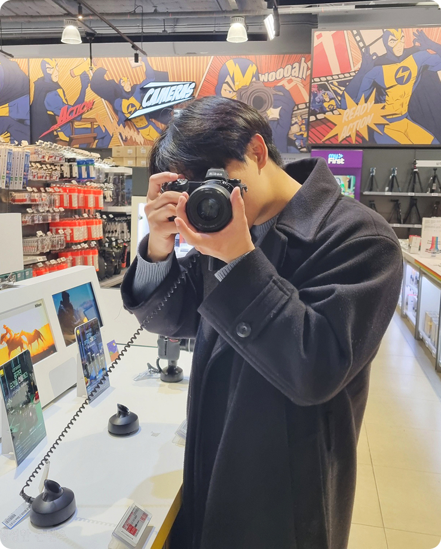

Trust with
기본에 충실한 성실함
작은 디테일이 모여 큰 신뢰를 만든다고 믿습니다.
화려한 장식보다 사용자가 편안한 단단한 기본기에 집중합니다.
정성을 다해 이용하기 좋은 화면을 설계하겠습니다.
혼자보다 함께일 때 더 좋은 결과가 나옵니다.
동료의 고민에 귀를 기울이며 개발 과정을 깊이 이해합니다.
기획을 디자인으로 완벽히 잇는 든든한 파트너가 되겠습니다.
사용자의 편의를 위해 흔들림 없는 구조를 만드는 웹디자이너 조성현입니다.
UI/UX 디자인 및 개발 실무 프로젝트 과정 수료
초등특수교육학과 졸업
광남고등학교 자연계열 졸업
웹디자인개발기능사
산업통상자원부GTQ(그래픽기술자격) 1급
한국생산성본부GTQi(그래픽기술자격 일러스트) 1급
한국생산성본부초등특수교육정교사 2급
극동대학교운전면허 1종 보통
경기도남부경찰청SBS아카데미컴퓨터아트학원 사업부 선임
갓파스시 홀서빙 및 주방
고해상도 이미지 편집과 정교한 합성을 통해 브랜드의 깊이감을 더하는 시각 결과물을 제작합니다. 다양한 리터칭 기술을 활용하여 제품의 매력을 극대화하고, 완성도 높은 그래픽으로 사용자의 시선을 사로잡습니다.
깔끔하고 정교한 벡터 그래픽을 활용하여 로고, 아이콘 등 선명도가 중요한 디자인 요소를 구현합니다. 수정과 확장이 용이한 고품질 소스를 제작하여 어떤 크기의 화면에서도 깨짐 없는 선명한 브랜드 이미지를 전달합니다.
직관적인 UI/UX 설계와 컴포넌트 시스템을 구축하여 효율적이고 일관성 있는 협업 환경을 만듭니다. 프로토타이핑을 통해 사용자 흐름을 미리 검증하고, 팀원들과 실시간으로 소통하며 최적의 디자인 솔루션을 도출합니다.
웹의 뼈대를 튼튼하게 세우며, 작은 코드 하나에도 이유를 담아 누구나 이용하기 편한 구조를 설계합니다. 검색창에서 내 작업물이 잘 찾아질 수 있도록 의미 있는 순서로 꼼꼼하게 배치하는 데 집중합니다.
스마트폰이나 태블릿 등 어떤 기기에서도 화면이 예쁘게 보이도록 정돈된 스타일과 레이아웃을 완성합니다. 사용자가 눈이 편안함을 느낄 수 있도록 적절한 간격과 부드러운 움직임을 더해 시각적인 즐거움을 줍니다.
멈춰있는 화면에 생동감을 불어넣어 사용자와 상호작용하는 재미있는 기능을 구현합니다. 버튼을 눌렀을 때 나타나는 효과처럼 서비스에 활력을 더하고 이용을 더 편리하게 만드는 요소를 개발합니다.
작업 과정을 차곡차곡 기록하고 관리하며 프로젝트가 안전하게 유지되도록 꼼꼼하게 운영합니다. 동료들과 작업 내용을 투명하게 공유하고 소통하며, 함께 더 좋은 결과물을 만들어가기 위해 성실하게 관리합니다.